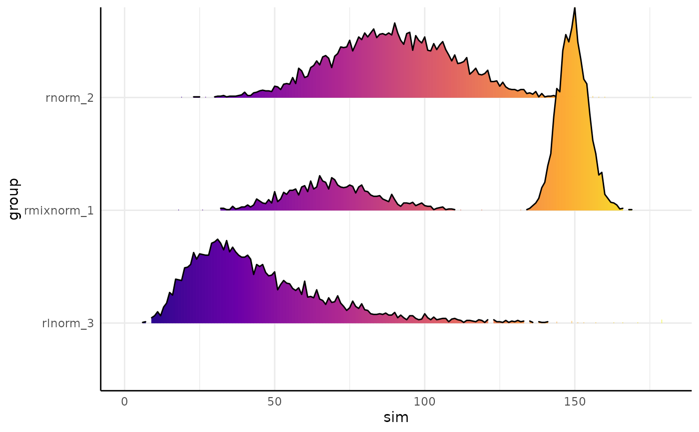
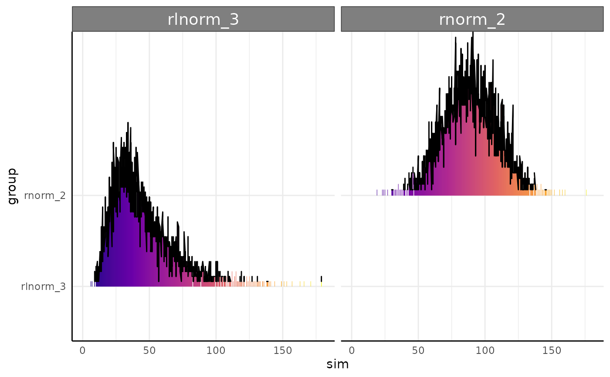
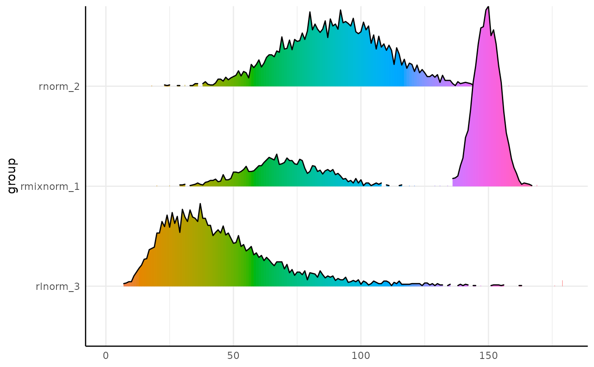

Make Joyplots for multi value trait plantCV data
Usage
pcv.joyplot(
df = NULL,
index = NULL,
group = NULL,
y = NULL,
id = NULL,
bin = "label",
freq = "value",
trait = "trait",
fillx = TRUE
)Arguments
- df
Data frame to use. Long or wide format is accepted.
- index
If the data is long then this is a multi value trait as a character string that must be present in `trait`. If the data is wide then this is a string used to find column names to use from the wide data. In the wide case this should include the entire trait name (ie, "hue_frequencies" instead of "hue_freq").
- group
A length 1 or 2 character vector. This is used for faceting the joyplot and identifying groups for testing. If this is length 1 then no faceting is done.
- y
Optionally a variable to use on the y axis. This is useful when you have three variables to display. This argument will change faceting behavior to add an additional layer of faceting (single length group will be faceted, length 2 group will be faceted group1 ~ group2).
- id
Optionally a variable to show the outline of different replicates. Note that ggridges::geom_density_ridges_gradient does not support transparency, so if fillx is TRUE then only the outer line will show individual IDs.
- bin
Column containing histogram (multi value trait) bins. Defaults to "label".
- freq
Column containing histogram counts. Defaults to "value"
- trait
Column containing phenotype names. Defaults to "trait".
- fillx
Logical, whether or not to use
ggridges::geom_density_ridges_gradient. Default is T, if F thenggridges::geom_density_ridgesis used instead, with arbitrary fill. Note thatggridges::geom_density_ridges_gradientmay issue a message about deprecated ggplot2 features.
Examples
library(extraDistr)
dists <- list(
rmixnorm = list(mean = c(70, 150), sd = c(15, 5), alpha = c(0.3, 0.7)),
rnorm = list(mean = 90, sd = 20),
rlnorm = list(meanlog = log(40), sdlog = 0.5)
)
x_wide <- mvSim(
dists = dists, n_samples = 5, counts = 1000,
min_bin = 1, max_bin = 180, wide = TRUE
)
pcv.joyplot(x_wide, index = "sim", group = "group")

x_long <- mvSim(
dists = dists, n_samples = 5, counts = 1000,
min_bin = 1, max_bin = 180, wide = FALSE
)
x_long$trait <- "x"
p <- pcv.joyplot(x_long, bin = "variable", group = "group")
# we might want to display hues as their hue
p + ggplot2::scale_fill_gradientn(colors = scales::hue_pal(l = 65)(360))
#> Scale for fill is already present.
#> Adding another scale for fill, which will replace the existing scale.

x_long$group2 <- "example"
pcv.joyplot(x_long, bin = "variable", y = "group", fillx = FALSE)
